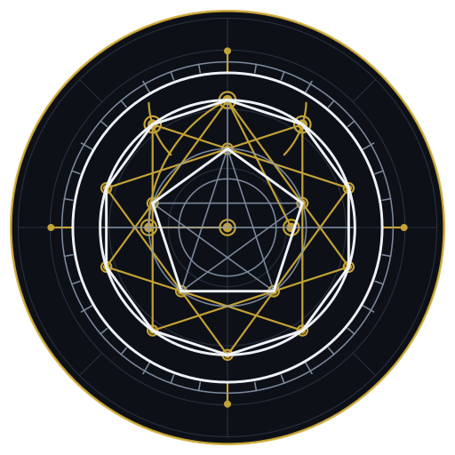

Alfred S. Posamentier & Ingmar Lehmann¶

Alfred S. Posamentier and Ingmar Lehmann assembled one of the richest modern anthologies of golden-ratio constructions and surprises in The Glorious Golden Ratio (2011). From sixteen distinct ruler-and-compass and Mascheroni constructions of $\phi$ to George Odom’s equilateral-midline chord, Star of David hexagram sections, and golden fractal trees, their work celebrates how a single proportion recurs across unexpected geometric settings. This mathematical catalog formalizes their theorems in exact SymPy algebra over $\mathbb{Q}(\phi)$ with calibrated vector plates.
Inside This Reference¶
Prometheus Books · 2011 · 4 Collections · 16+ Exact Constructions
The Glorious Golden Ratio — Mathematical Catalog & Concordance — Atomic golden-ratio constructions (POS-1.01–POS-1.16), Kepler’s $1:\sqrt{\phi}:\phi$ triangle, golden cuboids, triangle and circle gems, and an Appendix of Formulas verified in exact SymPy arithmetic.
Key Features¶
16-Construction Equivalence Matrix
Compares every golden-section construction side-by-side—distinguishing classical equivalents of Euclid II.11 and VI.30 from net-new circle-and-grid constructions.
Calibrated Euclid-Graphic SVGs
Twenty custom .euclid-graphic vector plates highlight major and minor golden segments, auxiliary arcs, Kepler triangles, and Euler nine-point circles.
Exact $\mathbb{Q}(\phi)$ Algebra & Formulas
Verifies continued fractions, Binet/Lucas/Cassini identities, Millin series, and fractal self-similarity ratios in symbolic SymPy without floating-point rounding.
Reference & Project¶
Scholarly Apparatus
People — Profiles of Posamentier, Lehmann, Ana Lúcia Braz Dias, and referenced geometers
Bibliography — Primary 2011 edition, triangle monographs, and historical sources
Glossary — Definitions of golden cuboids, Mascheroni constructions, and geometric invariants
About This Project
About & Using This Edition — Scope, symbolic methodology, and navigation guide
Demos & Python Modules — Interactive scripts and exact symbolic validators